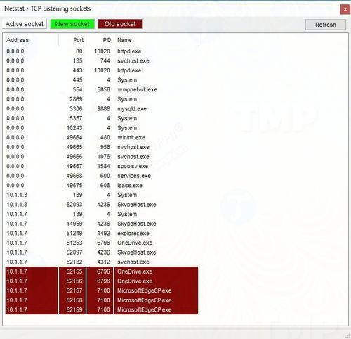

1. XAMPP
XAMPP là chương trình tạo web server được ứng dụng trên các hệ điều hành Linux, MacOS, Windows, Cross-platform, Solaris. Ý nghĩa chữ viết tắt XAMPP là gì? XAMPP hoạt động dựa trên sự tích hợp của 5 phần mềm chính là Cross-Platform (X), Apache (A), MariaDB (M), PHP (P) và Perl (P), nên tên gọi XAMPP cũng là viết tắt từ chữ cái đầu của 5 phần mềm này.
Hướng dẫn cài đặt XAMPP trên windows
1. Bước 1: Download XAMPP
2. Bước 2: Nhấp vào file có đuôi .exe trên file tải xuống.
3. Bước 3: Trên cửa sổ Set up, tích chọn các phần mềm mà bạn muốn cài đặt. Nếu bạn muốn cài WordPress trên XAMPP, các phần mềm bắt buộc phải chọn là MySQL, Apache, PHPMyAdmin. Sau khi chọn xong, nhấn Next.
4. Bước 4: Chọn thư mục cài đặt và nhấn Next.
5. Bước 5: Chờ vài phút để cài đặt, sau khi cài đặt hoàn tất nhấn finish để kết thúc.
Cấu Hình Xampp Trên Windows 10
Xampp Control Panel bao gồm 3 phần chính. Trong phần Modules hiển thị danh sách tất cả các service có sẵn. Bạn có thể chạy từng service một bằng cách click chọn nút Start.
Khi chạy một số dịch vụ, như Apache và MySQL, ở cột bên phải bạn sẽ nhìn thấy số ID của process và số cổng TCP/IP mà từng dịch vụ đang sử dụng. Ví dụ, mặc định Apache sử dụng cổng TCP/IP 80 và 443 còn MySQL sử dụng cổng TCP/IP 3306.
Ngoài ra bạn có thể click chọn nút Admin để truy cập bảng điều khiển Admin cho từng dịch vụ và xác minh mọi thứ đang hoạt động đúng cách.
Ở cột bên phải hiển thị danh sách các nút để cấu hình Xampp, bao gồm nút Config để cấu hình các module tự động khởi động khi chạy Xampp.

Netstart cung cấp danh sách các dịch vụ hiện đang truy cập hệ thống mạng, thông tin process ID và cổng TCP/IP

Các nút truy cập nhanh bao gồm mở tiện ích dòng lệnh shell, thư mục cài đặt Xampp, services, ... .
Cuối cùng là phần logs. Tại đây bạn có thể xem những thay đổi cài đặt hoặc những gì diễn ra khi chạy module. Ngoài ra đây cũng là nơi để tìm ra thủ phạm gây ra các vấn đề, sự cố.
Các cài đặt mặc định Xampp tạo môi trường thử nghiệm cho người dùng chạy một trang web cá nhân hoặc client . Tuy nhiên tùy thuộc vào cấu hình cài đặt, người dùng có thể sẽ phải thay đổi số cổng TCP/IP cho máy chủ Apache, kích thước tải lên cơ sở dữ liệu hoặc đặt mật khẩu cho phpMyAdmin.
Để thay đổi các cài đặt này, bạn sử dụng nút Config của các dịch vụ tương ứng. Chẳng hạn như file httpd.conf để thay đổi cài đặt máy chủ Apache và file my.ini để thay đổi cài đặt cho MySQL.
2. WAMP
WAMP hay Wampserver là một phần mềm giả lập server miễn phí, cho phép chạy thử website ngay trên máy tính cá nhân bằng Localhost. Ý nghĩa của từ WAMP là gì? Phần mềm WAMP dùng để cài đặt Apache, MySQL, và PHP lên hệ điều hành Windows.

Hướng dẫn cài đặt WAMP trên windows
1. Bước 1: Download WAMP
2. Bước 2: Mở file cài đặt lên.
3. Bước 3: Màn hình sẽ hiển thị cửa sổ cài đặt. Bạn chỉ cần nhấn OK, Next hoặc Install liên tục cho đến khi kết thúc cài đặt là được.
4. Bước 4: Nếu hệ thống không thông báo bất kỳ lỗi gì và thấy shortcut icon của WAMP hiển thị trên màn hình Desktop thì có nghĩa là bạn đã cài đặt thành công.
Cấu Hình WAMP Trên Windows 10
Để sử dụng, bạn chỉ cần click double vào icon WAMP trên Destop. Khi đó, tại khay hệ thống (System Tray) ở góc dưới, bên phải màn hình, sẽ xuất hiện một biểu tượng WAMP.Nhờ màu sắc của biểu tượng này mà bạn sẽ biết được trạng thái hoạt động của WAMP. Nếu WAMP hoạt động bình thường thì biểu tượng có màu xanh lá. Nếu WAMP chỉ hoạt động 1 hoặc 2 chức năng thì biểu tượng sẽ có màu cam. Còn nếu không có chức năng nào của WAMP hoạt động thì biểu tượng sẽ có màu đỏ

Để truy cập vào menu của Wampserver, hãy click chuột trái vào biểu tượng WAMP trên khay hệ thống. Bạn sẽ thấy một bảng biểu xuất hiện với một số lệnh chính sau:
1. Localhost: Cho phép mở website nằm trong folder web root bằng trình duyệt web.
2. PHPMyAdmin: Cho phép mở trang quản lý cơ sở dữ liệu PHPMyAdmin thông qua trình duyệt web.
3. Apache: Các lệnh liên quan đến web chủ Apache.
4. MySQL: Các lệnh liên quan đế hệ quản trị cơ sở dữ liệu MySQL.
5. PHP: Nơi sẽ hiển thị và cho phép bạn chỉnh sửa các tập tin cấu hình sử dụng ngôn ngữ lập trình PHP.
. 6. Start All Services: Bật tất cả các chức năng/dịch vụ của WAMP
7. Stop All Services: Tắt tất cả các chức năng/dịch vụ của WAMP.
8. Restart All Services: Khởi động lại tất cả các chức năng/dịch vụ của WAMP.